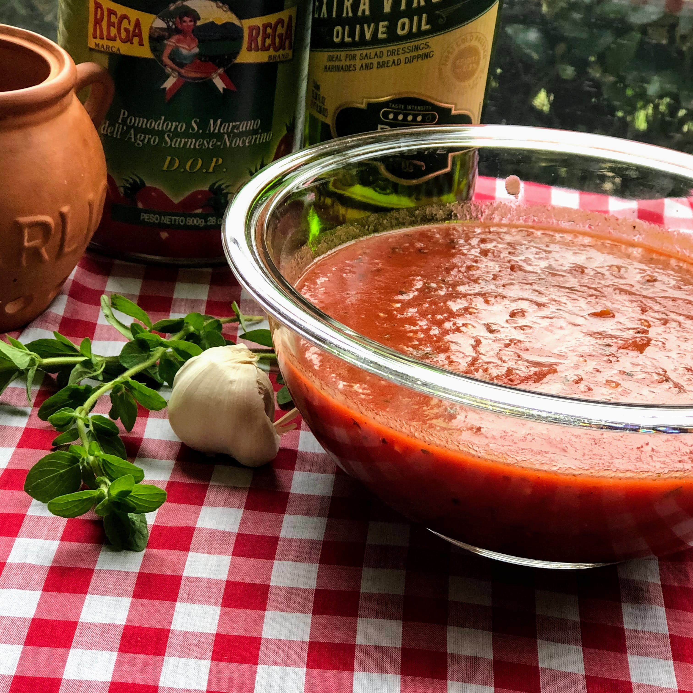

Tomato Sauce

Description
A good tomato sauce is a hallmark of almost every cultures cuisine,
especially those damn italians cooking. Using only basic ingredients
you can create a savoury and slightly sweet tomato sauce that can be
used for all kinds of dishes
Ingredients
- 1 Can Full Peeled Tomatoes
- 1 Full Bulb Garlic Minced
- 1 White Onion Chopped
- 1 Tablespoon Olive Oil
- 1 Handful Basil Chopped
- 1 Fresh Bay Leaf
- 1 Tablespoon Pepper Flakes
- 1 Teaspoon Sea Salt
- Pepper to Taste
Steps
- Mince garlic and chop onion to a medium size
- On medium heat add oil to a large pot
- Add garlic and pepper flakes to pot until fragrent
- Add onion and cook until sweating
- Pour full can of tomatoes, add the basil, bay leaf,
salt, and a little bit of pepper then let sauce bubble
and turn heat to medium low
- Crush full tomatoes by pushing the against the
side of the pot until sauce comes to a slightly
smooth consistency
- Let sauce reduce for about 30-45 minutes, taste
as you go, adding salt and pepper to taste
- Remove bay leaf and serve with whatever dish you want